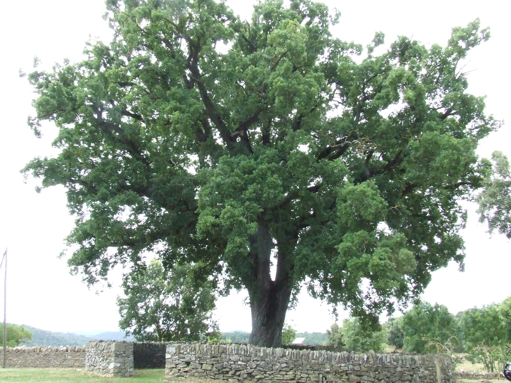
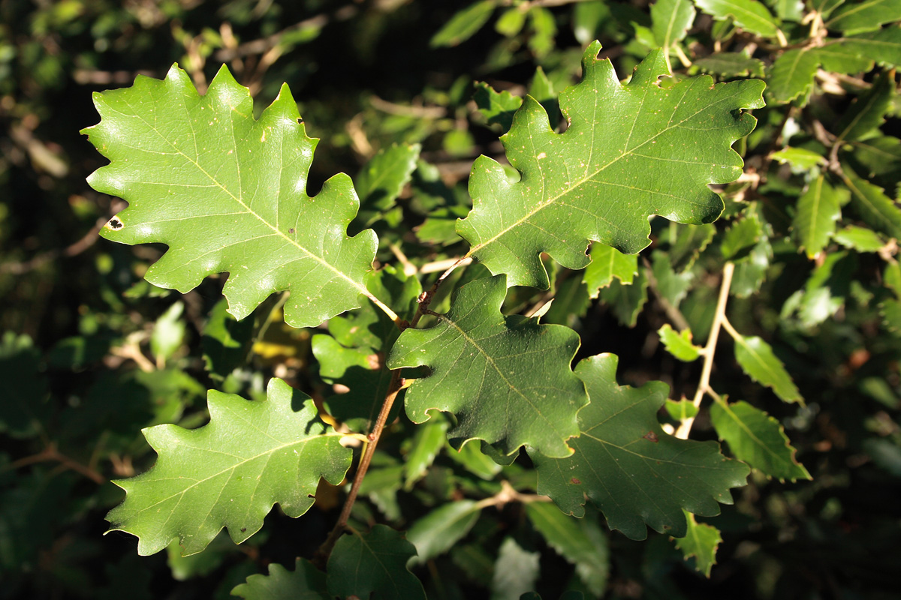

Roure
Descripció
El roure martinenc (Quercus pubescens) és un arbre caducifoli mitjà que pot arribar als 25 metres. És el roure per excel·lència dels països submediterranis. A Catalunya es troba als boscos de muntanya mitjana. Tal com indica el seu nom llatí, els branquillons i les fulles són peluts. Està catalogat com a espècie vulnerable.
Morfologia
El seu tronc és tort si l'arbre creix aïllat, però dret al bosc; l'escorça és marronosa i fissurada, presenta una capçada ampla i clara. Té les fulles de 5 a 10 cm de llargada, densament peludes, de joves per totes dues cares, però després mantenen els pèls només al revers. De dimensions mitjanes i gruixudes, les fulles tenen els marges profundament lobats. Les flors masculines es disposen en aments pènduls i les femenines estan envoltades d'un involucre d'on tan sols sobresurten els estils. El gla en forma d'ovoide allargat i molt empinat, amb el peduncle curt i pelut, és cobert per una cúpula amb escames molt cenyides.
Als llocs de transició, es pot confondre amb el roure de fulla gran, amb el qual s'hibrida fàcilment.
La roureda de roure martinenc, sent una formació ben adaptada als hàbitats del nostre país, i tenint una bona resistència al foc, pot fer en molt bones condicions les funcions genèriques del bosc, tals com protecció del sòl, regulació hidrològica, generació de biodiversitat, valors paisatgístics. Històricament, la fusta del roure martinenc va ser utilitzada per a la producció de carbó. Actualment s'explota com a llenya de cremar, i en bones estacions pot donar fusta de serra.


Torna